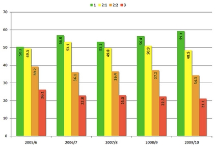
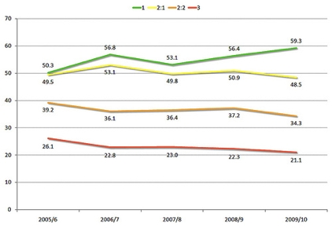
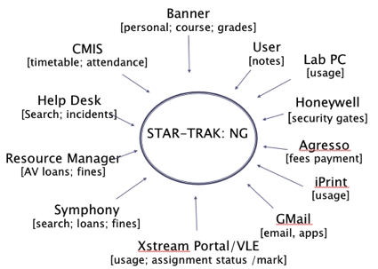

Learning analytics
Learning analytics produce suggestions as to students who appear to be performing badly, and
may benefit from a positive intervention designed to help them in their academic studies. Thus at
first sight learning analytics may seem to involve the same kinds of recommendation engines as
resource recommendation. However, the basic approach is somewhat divergent.
Basically the approach works by finding activity data that differentiates passing students from
students at risk of failing or dropping out of university. This involves correlating historic activity data
sets with the results achieved by past cohorts of students, looking for statistically significant
measures. Once found these activity data sets are called differentiators.
Once differentiators (or, using greater sophistication, patterns in differentiators) have found, the
differentiators can be used to identify students ho are in current cohorts and at risk.
The two projects interested in learning analytics were LIDP and STAR Trak: NG.
LIDP found a differentiator in the number of library books borrowed by students who achieved
different degree classifications (1, 2.1, etc). The project takes care to point out that this is not a
causal relationship, but rather is only based on statistically significant correlations. Two graphs
expressing this are:

and

STAR Trak: NG used more sources of data in its learning analytics algorithms:

However, STAR Trak: NG have not published the algorithm they used to produce differentiators
from these sources.